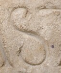

S - type2
Script
Latin
Grapheme
S
Allograph
type2
Characteristic form:
spine is long
Typology
Full typology of allographs
Exemplar

Inscription ISic001876
.
Origin: Thermae Himeraeae
between AD 1 and AD 400
Other examples